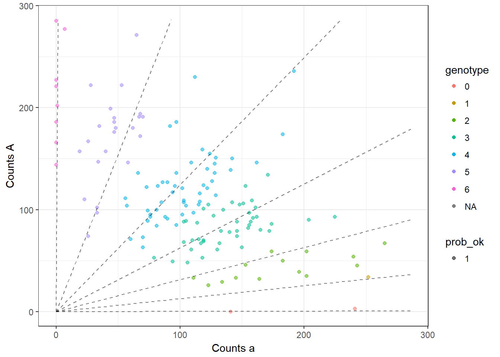
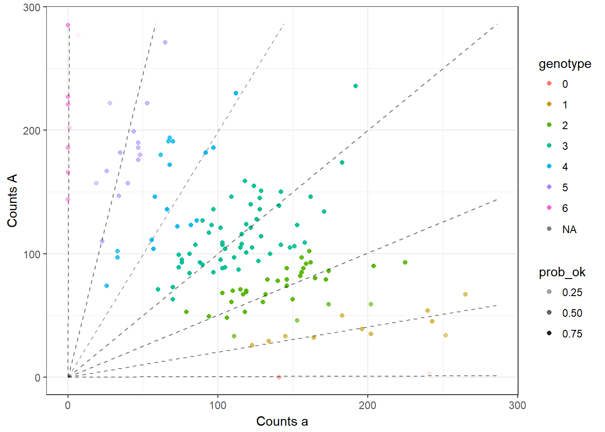
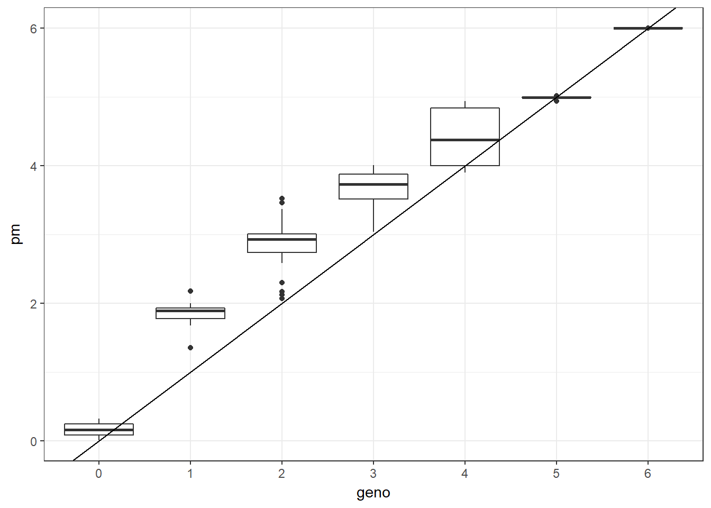

Here, I explore why updog does poorly on a subset of the simulated data.
library(tidyverse)## -- Attaching packages ------- tidyverse 1.2.1 --## v ggplot2 2.2.1 v purrr 0.2.4
## v tibble 1.4.2 v dplyr 0.7.4
## v tidyr 0.7.2 v stringr 1.3.0
## v readr 1.1.1 v forcats 0.2.0## -- Conflicts ---------- tidyverse_conflicts() --
## x dplyr::filter() masks stats::filter()
## x dplyr::lag() masks stats::lag()library(updog)
simsdat <- read.csv("../../../reproduce_genotyping/Output/sims_out/sims_out.csv")
badindex <- which(simsdat$bias_val == 1 & simsdat$od_param == 0.01 & simsdat$uham < 0.5) ## this is also the seed of one_repSame way I calculated parvals in simulations
## Read in size data to get realistic size distribution --------------------------------
size_mat <- read.csv( "../../../reproduce_genotyping/Output/shirasawa_snps/example_readcounts.csv", row.names = 1)
## Parameters to explore --------------------------------------------
bias_seq <- c(1, 0.75, 0.5, 0.25)
seq_error <- 0.005 ## Constant throughout
out_prop <- 0
od_seq <- c(0, 0.01, 0.05)
ploidy <- 6
itermax <- 1000
## Set up `updog` object parameters that don't vary ------------------
usame <- list()
usame$input$ploidy <- ploidy
usame$input$model <- "hw"
usame$seq_error <- seq_error
usame$out_prop <- out_prop
usame$p1geno <- -1
usame$p2geno <- -1
usame$out_mean <- 1/2
usame$out_disp <- 1/3
class(usame) <- "updog"
## Run Simulations ------------------------------------------------
parvals <- expand.grid(allele_freq = seq(0.05, 0.95, length = itermax), bias_val = bias_seq, od_param = od_seq)
parvals$seed <- 1:nrow(parvals)
parvals$osize <- sapply(size_mat[, 1:itermax], function(x) x[!is.na(x)])
par_list <- list()
for (list_index in 1:nrow(parvals)) {
par_list[[list_index]] <- list()
for (inner_list_index in 1:(ncol(parvals) - 1)) {
par_list[[list_index]][[inner_list_index]] <- parvals[list_index, inner_list_index]
names(par_list[[list_index]])[inner_list_index] <- colnames(parvals)[inner_list_index]
}
}
for (list_index in 1:nrow(parvals)) {
par_list[[list_index]]$input$osize <- parvals$osize[[list_index]]
}Run the one rep
unew <- par_list[[badindex]]
set.seed(unew$seed)
usim <- usame
usim$bias_val <- unew$bias_val
usim$allele_freq <- unew$allele_freq
usim$od_param <- unew$od_param
usim$input$osize <- unew$input$osize
## Simulate New Data ----------------------------------------------
rout <- updog::rupdog(usim)
ocounts <- rout$input$ocounts
osize <- rout$input$osize
true_ogeno <- rout$ogeno
## Run updog -------------------------------------------------
bias_start <- exp(-2:2 * 0.7) ## plus to minus three sd
llike_old <- -Inf
for (index in 1:length(bias_start)) {
utemp <- updog::updog_vanilla(ocounts = ocounts, osize = osize, ploidy = usim$input$ploidy, model = "hw",
out_prop = 0, update_outprop = FALSE, bias_val = bias_start[index], non_mono_max = Inf)
if (utemp$llike > llike_old) {
uout <- utemp
llike_old <- uout$llike
}
}Plot looks reasonable, just genotype 1 looks bad.
plot(uout)
uone <- updog(ocounts = rout$input$ocounts,
osize = rout$input$osize,
ploidy = rout$input$ploidy,
model = "f1",
bias_val = 1,
update_bias_val = FALSE)Fixing it at one has lower likelihood
uone$llike## [1] -744.2uout$llike## [1] -730.7But it does have nicer looking fits
plot(uone)
The bias is way off
unew$bias_val## [1] 1uout$bias_val## [1] 1.597The 95% confidence interval for bias isn’t too large
uout$bias_val## [1] 1.597exp(uout$log_bias + 2 * sqrt(uout$covmat[1, 1]))## [1] 1.799exp(uout$log_bias - 2 * sqrt(uout$covmat[1, 1]))## [1] 1.417od is way off
unew$od_param## [1] 0.01uout$od_param## [1] 0.02043But prop_mis will at least flag this SNP
uout$prop_mis## [1] 0.1916The genotypes are all shifted away from the truth
ggplot(data_frame(geno = factor(rout$ogeno), pm = uout$postmean), aes(x = geno, y = pm)) +
geom_boxplot() +
theme_bw() +
geom_abline(slope = 1, intercept = -1)
This R Markdown site was created with workflowr